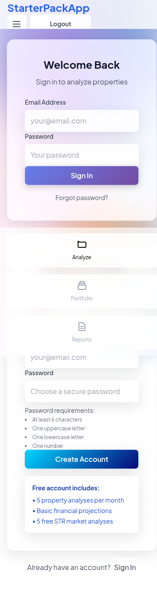

Current Issues Found
Implementation Status
- Gradient Background: ✅ Visible
- Glass Effects: 47 elements with blur effect
- Body Transparency: rgba(0, 0, 0, 0)
- CSS Files: ✅ All loaded
Desktop View

Mobile View

Next Steps
- Wait for Vercel deployment to complete (glass-override.css needs to be deployed)
- Verify gradient z-index is set to -1 in production
- Check that all component backgrounds are using glass effects
- Test with actual property data to see full analysis flow